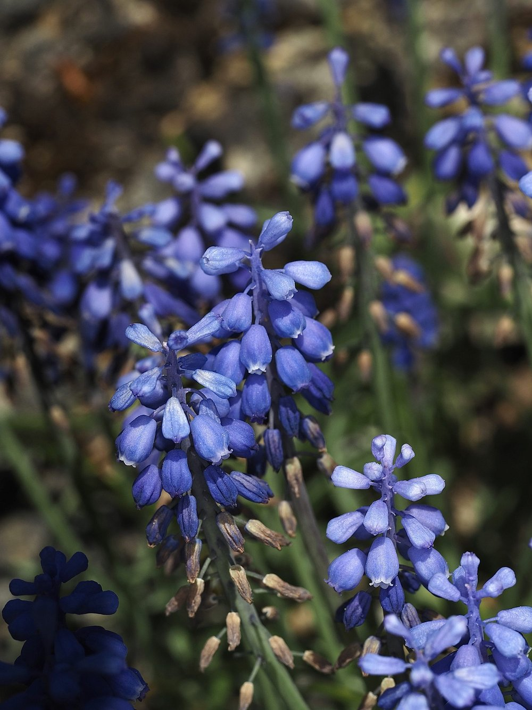

Nr. 12 · Frühblüher der Wiese
Traubenhyazinthe
Muscari botryoides
Blaue Trauben im Frühlingswind – und eine Pflanze zwischen Garten und Wildnis.


Sterile und fertile Blüten – eine clevere Arbeitsteilung
An jeder Traubenhyazinthe-Traube sind die oberen Blüten steril – sie produzieren keinen Pollen und keinen Nektar. Ihre Aufgabe ist Werbung: Sie sind auffälliger und locken Bestäuber von weitem an. Die unteren Blüten machen dann den eigentlichen Job: Nektar, Pollen, Befruchtung. Eine clevere Arbeitsteilung innerhalb einer einzigen Blütentraube.
Zwischen Garten und Wildnis
Die Traubenhyazinthe ist ursprünglich mediterran und hat sich aus Gartenanlagen in viele Wiesen und Weinberge ausgebreitet. In manchen Regionen ist sie vollständig eingebürgert und fühlt sich wie heimisch an. Ob Neophyt oder Archäophyt – für Bienen im Frühjahr ist sie schlicht eine wertvolle Ressource.
Wissenswertes & Merksätze
Muscardin – schwach giftig
Die Herzglykoside sind in kleinen Mengen ungefährlich, bei grösserem Verzehr aber problematisch. Als Zierpflanze und Bienenweide ideal.
Blau = Bienenfarbe
Blau und Violett sind die Farben, auf die Bienen am stärksten reagieren – kein Zufall, dass so viele Frühjahrsblüher blau blühen.
Sterile Lockblüten
Die oberen, helleren Blüten sind steril – sie werben nur. Die unteren dunklen Blüten machen den eigentlichen Job.